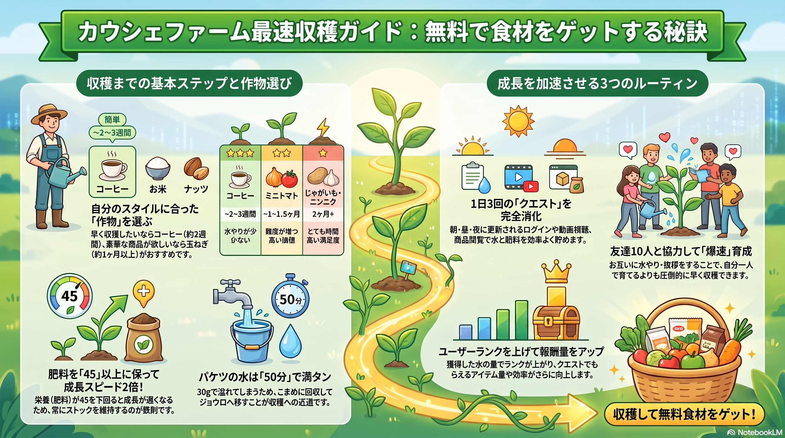

▲ カウシェファーム最速収穫ガイド（保存してご活用ください）
🏆 最速収穫の4大原則
🚀
この4つを守るだけで収穫スピードが劇的に変わります！
💧
①バケツ50分回収
50分で30g溜まる。放置で溢れるので小まめに回収
🌿
②肥料45以上キープ
45以上で成長速度2倍。下回ると一気に遅くなる
☀️🌞🌙
③朝昼晩クエスト
1日3回更新。ログイン・CM視聴・商品閲覧で水・肥料ゲット
👥
④フレンド10人
挨拶・水やりで朝昼晩各10回分の水・肥料が追加獲得
📅 朝昼晩3回クエスト完全攻略
クエストは1日3回更新されます。ランクによって獲得量が変わります。
☀️
朝
4:00〜10:59
🌞
昼
11:00〜16:59
🌙
夜
17:00〜翌3:59
💧 水クエスト（毎回チェック）
朝昼晩×3回| ログインボーナス | 1日75〜150g（ランクによる） |
|---|---|
| 商品ページを15秒見る | 1日75〜150g |
| CMを見る（2回） | 1日90〜165g |
| フレンドに挨拶（10回） | 1回10〜15g × 10人 = 最大150g/回 |
💧
誰でも1日最低240gの水が無課金で獲得できます。フレンド10人で朝昼晩の挨拶をすると1日300〜450g追加されます。
🌿 肥料クエスト（毎回チェック）
朝昼晩×3回| ログインボーナス | 1日5〜7個 |
|---|---|
| 商品ページを30秒見る | 朝昼晩6〜8個ずつ（計18〜24個） |
| CMを見る | 朝昼晩6〜8個ずつ（計18〜24個） |
| フレンドの作物に水やり（10回） | 1回2個 × 30回 = 60個/日 |
🌿
1日合計で肥料119〜139個が獲得可能。クエストをこなせば肥料は余るほど貯まるので積極的に使いましょう。
🪣 バケツ回収（50分ごと）
1回30g井戸のバケツは50分で30g自動補充されます。満杯（30g）になると溢れて止まるため、こまめに回収してジョウロへ移しましょう。
| 回収頻度 | 1日の水獲得量 |
|---|---|
| 1時間ごと（最高効率） | 約360g/日 |
| 朝・夜2回 | 約60g/日（推奨最低ライン） |
実践的なコツ：朝の準備前・昼休み・夜就寝前にバケツ確認の習慣をつけるだけで効率が大幅アップ。
🌿 肥料45キープの攻略法
⚡
肥料が45以上あると作物の成長速度が常時2倍！水をやるたびに肥料が1消費されるが、クエストで毎日119〜139個入手できるので基本的に余りやすい。
肥料を一気に増やす方法
-
友達招待（初回限定）：肥料500個
まだ一度も友達を招待していない場合、最初の招待で双方に肥料500個。家族のスマホや別端末を使う人もいます。 -
友達招待（通常）：1人あたり肥料200個
新規ファームユーザーを招待するたびに肥料200個。3人招待で600個＝約10日分の時短。 -
カウシェdeポン（ガチャ）：肥料5個/回
クエストの対象。毎日引いて5個確保。水やギフトが当たる場合も。
⚠️
肥料の効果は「栄養45以上で2倍速」。水やり1回で栄養が1消費されます。肥料が45を下回らないよう、水やりの前に肥料残量を確認する習慣をつけましょう。
👥 フレンド10人が最強の理由
水・肥料クエストの「挨拶」「水やり」は10回分までカウント。11人以上いても追加報酬はありません。
🎯
フレンド10人 × 朝昼晩3回 = 挨拶30回 × 水10〜15g = 最大450gの水 + 水やり30回 × 肥料2個 = 60個の肥料が毎日追加されます。
フレンドを増やす方法
- SNS（X・Instagram）で「カウシェ 水やり友達募集」と検索
- カウシェファームの掲示板・コミュニティを活用
- 家族・友人に招待リンクを送る
サポートキャラの解放状況
| おとくマル（10人達成） | 水50〜100g・肥料15〜30・3%OFFクーポンをランダムで毎日届けてくれる。ハズレなし！ |
|---|
🚶 おさんぽ機能（2026年4月追加）
スマホの歩数計と連動。日常の歩数が水・肥料に変わります。
| ひまわりの種の獲得 | 1,000歩ごとに15個（上限8,000歩まで） |
|---|---|
| ボーナス | 4,000・6,000・8,000歩達成時にCM閲覧で3倍（45個） |
| 使い方 | 150個のひまわりの種をおさんぽマルに渡す→水50〜200g または 肥料5〜30個 |
移動中にカウシェを開いておくと自然に歩数が貯まります。買い物・通勤・散歩など日常の歩数をそのまま活用しましょう。
📊 毎日チャレンジ（ランクで報酬が変わる）
1日の水やり量に応じて翌日ボーナスがもらえます。
| ランク | 条件 | 翌日ボーナス |
|---|---|---|
| 入門・一人前 | 水やり一定量 | 水または肥料（少量） |
| 熟練 | 1日200gの水やり | 翌日40g |
| 達人 | 1日400gの水やり | 翌日80g |
⚠️ 注意点・よくある失敗
- クーポン有効期限は収穫後30日間。期限切れに注意。収穫したらすぐ対象商品を確認しましょう
- 難しい作物（たまねぎ・ミニトマト）は2ヶ月以上かかる。長期戦の覚悟で
- 同一人物の複数アカウント作成は規約違反でアカウント停止の可能性あり
- アクセス集中時はアプリが重くなることがある。イベント直後は時間をおいて再試行
- コインは無課金でも収穫可能だが、ランクが低い間はバケツ回収にCM視聴が必要